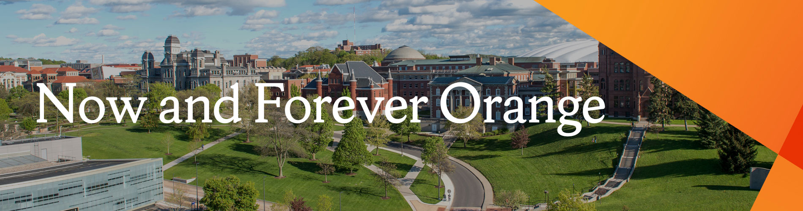
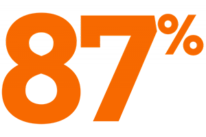

80% of Syracuse University students received some form of financial support totaling more than $414 million (2019-2020 data)

87% placement outcome (Graduates in full-and part-time positions, military service, volunteer or service programs, and graduate school.)
Positions related to Career Goals